Stories of Rescue and Hope
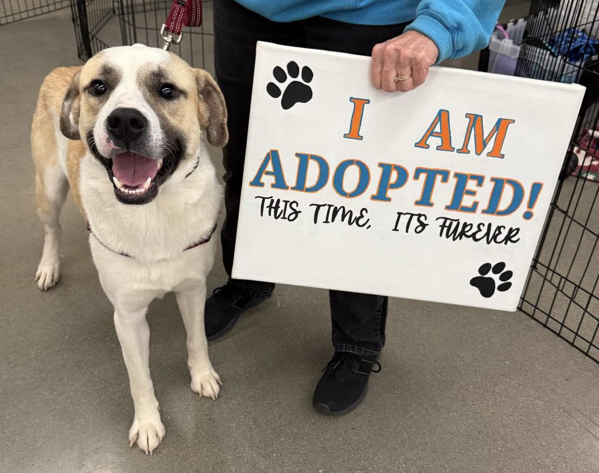
Every animal who comes to Humane Labs Rescue has a different journey. Some need medical care, some need patience, and all of them need a safe place to begin again.
Read a few of the rescue stories below and see how care, compassion, and adoption can completely change an animal’s life.
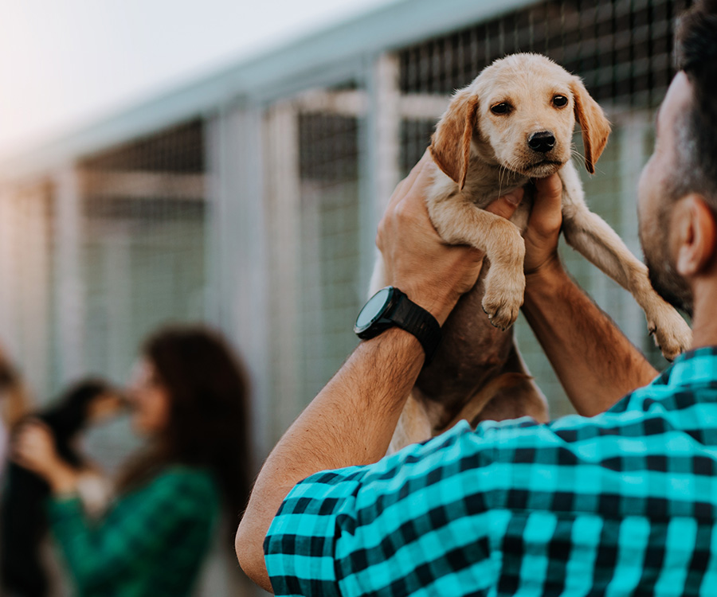
Click to Read Each Story
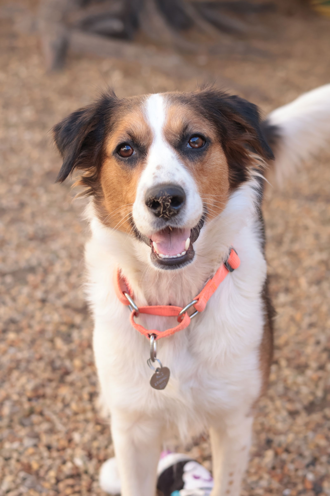
Bella was rescued from an unsafe situation and brought to Humane Labs Rescue for care. She was underweight and nervous when she first arrived, but after medical treatment, daily walks, and foster care, she became healthy and playful. Bella was later adopted by a family who gives her a safe and loving home.
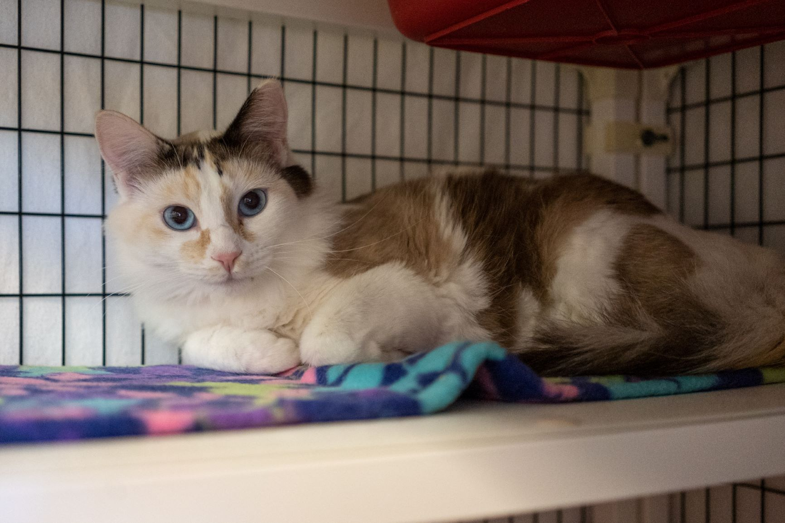
Max was found with an injured paw and needed immediate attention. After treatment, recovery time, and gentle care, he became much more comfortable around people. Max was eventually adopted by a couple looking for a calm and affectionate companion.
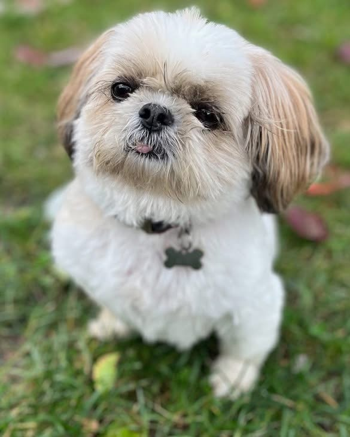
Luna was very shy when she first entered the rescue. Staff and volunteers worked with her every day to help build trust and confidence. Over time, Luna became energetic, friendly, and ready for adoption with a loving family.

Slater came to Humane Labs Rescue after being found alone and exhausted. At first he was cautious around new people, but with steady care, daily playtime, and patience, he began showing his happy personality. Slater now lives in a home full of love and attention.
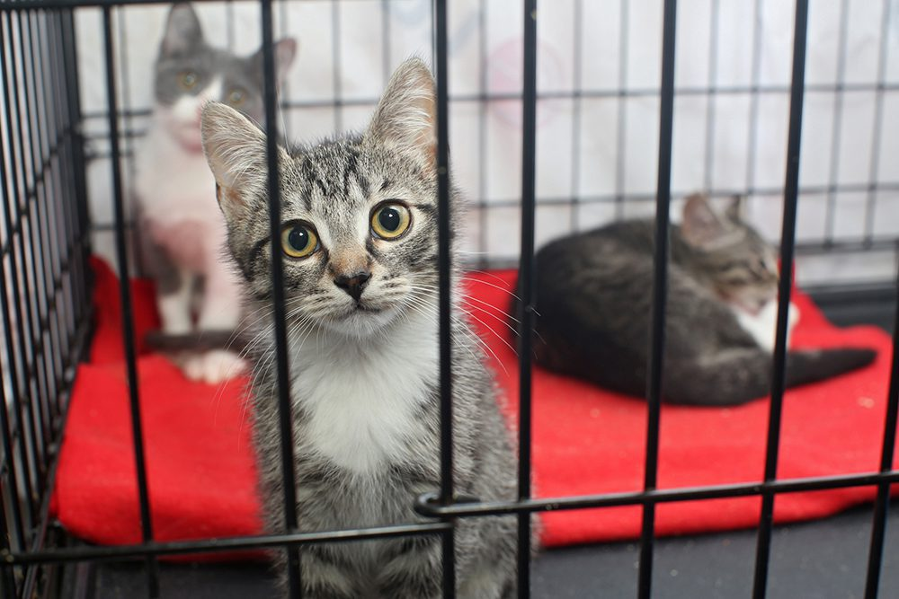
Milo was rescued after spending weeks outside without reliable food or shelter. He was quiet and unsure at first, but with warm bedding, regular meals, and patient care, he slowly became relaxed and affectionate. Milo now spends his days in a calm home where he is safe, comfortable, and loved.
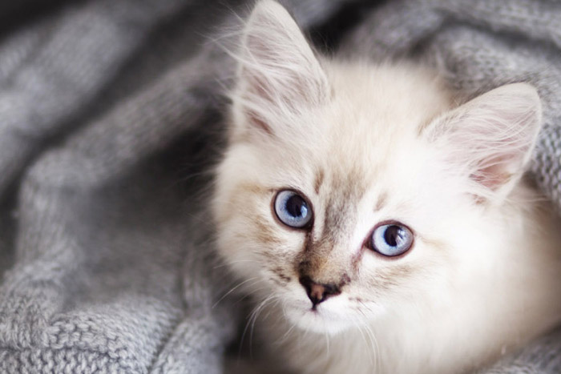
Cleo came to Humane Labs Rescue after being surrendered by a family that could no longer care for her. She needed time to adjust, but the rescue team helped her feel secure again. With gentle attention and daily interaction, Cleo regained her confidence and was adopted into a home where she now thrives.
Rescue Moments Gallery
A few more moments that show the care, recovery, and joy behind every rescue journey.
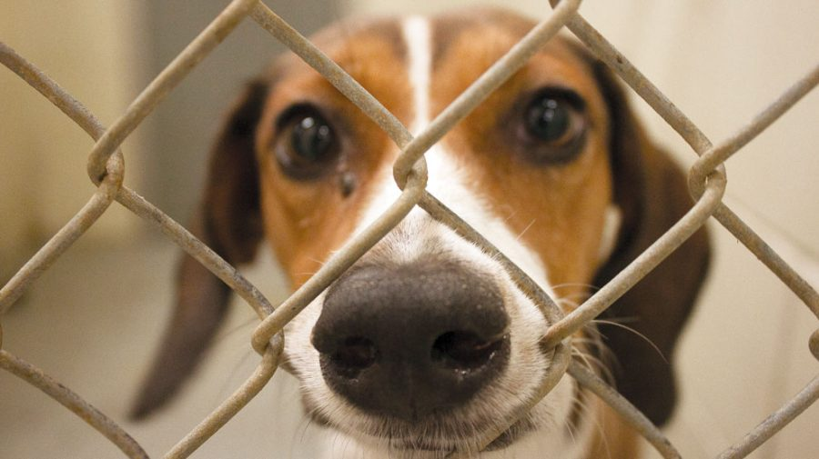
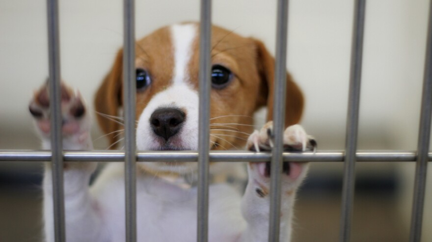
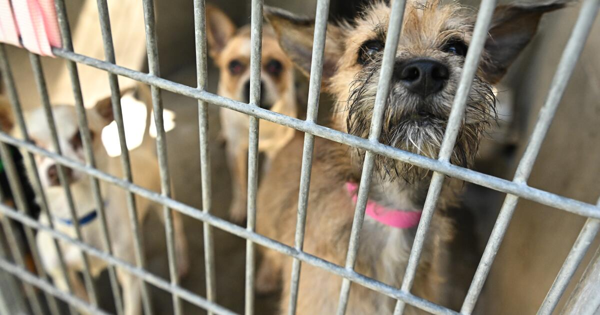
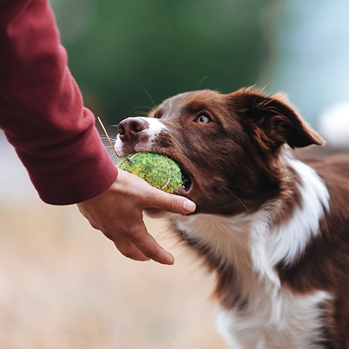
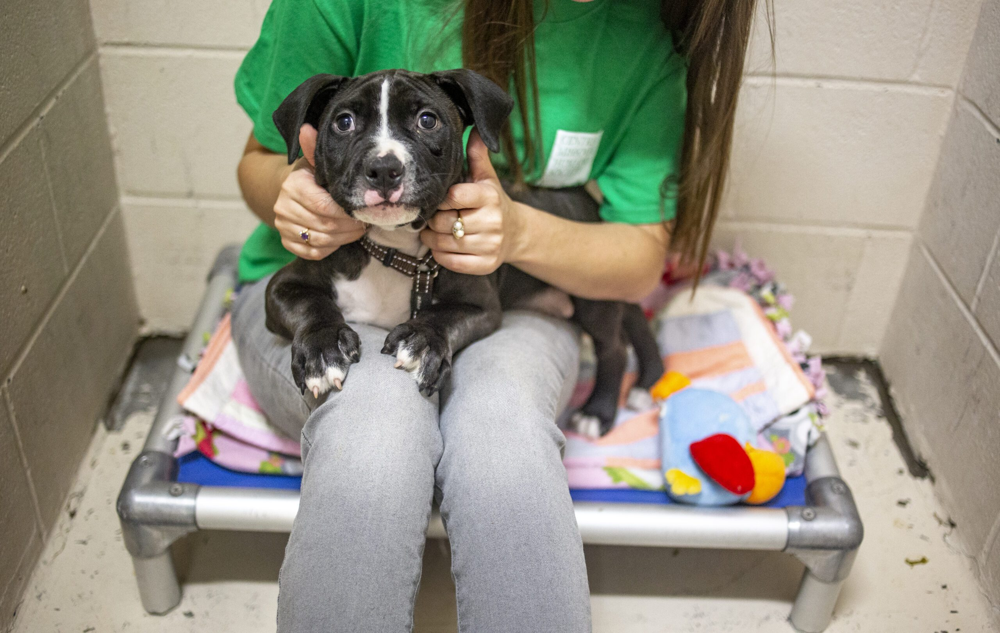
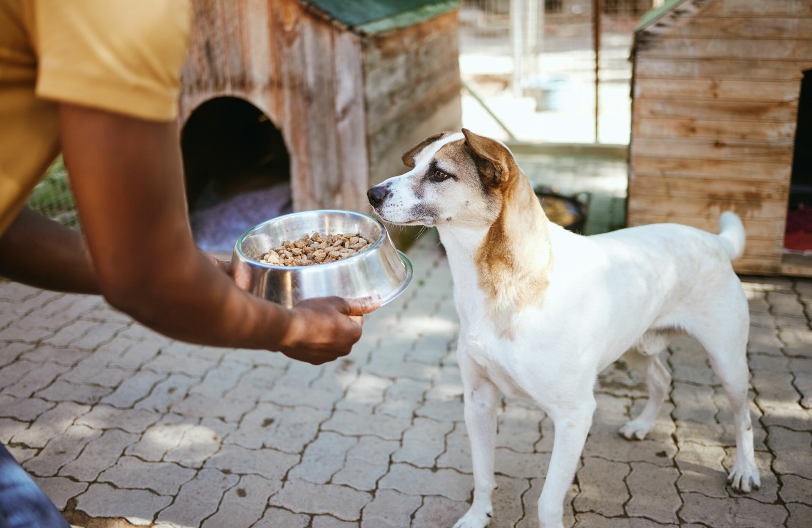
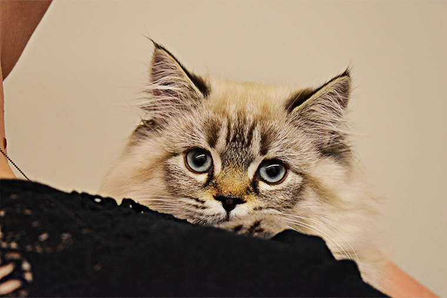
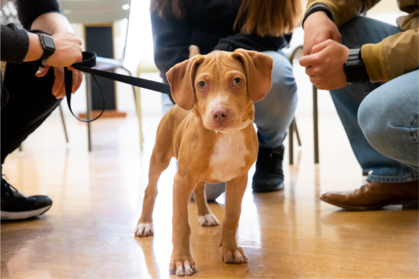

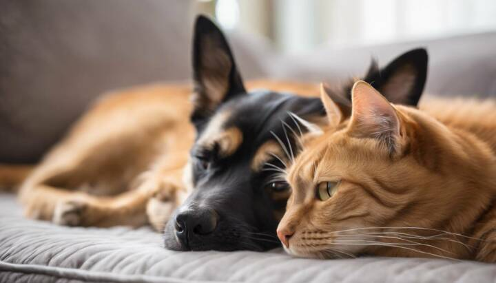

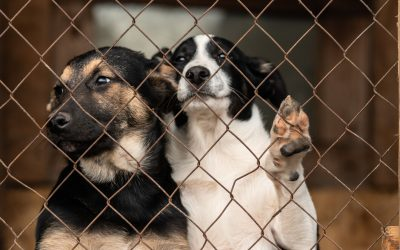